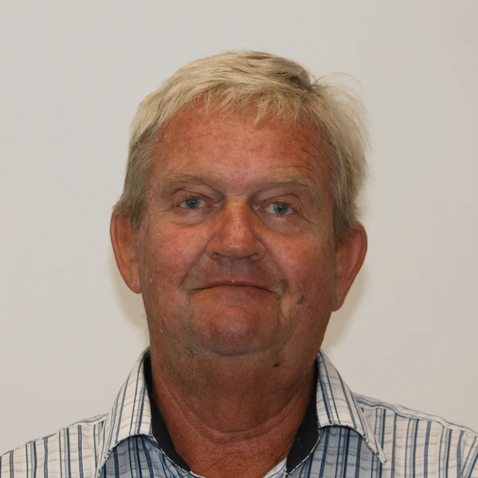
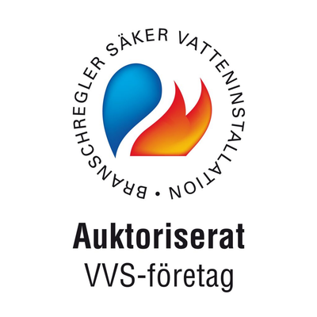
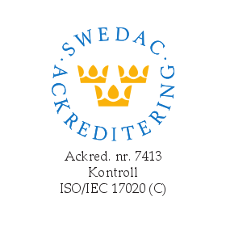
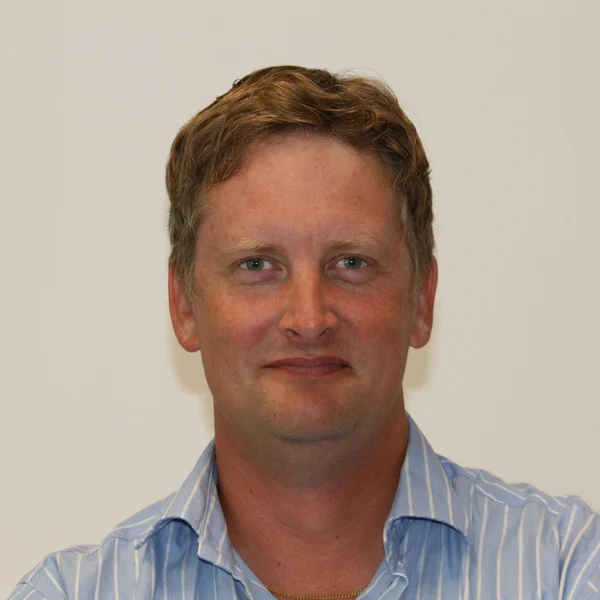
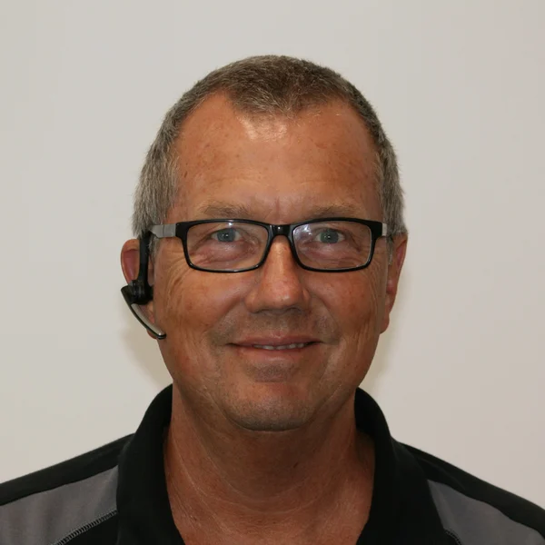
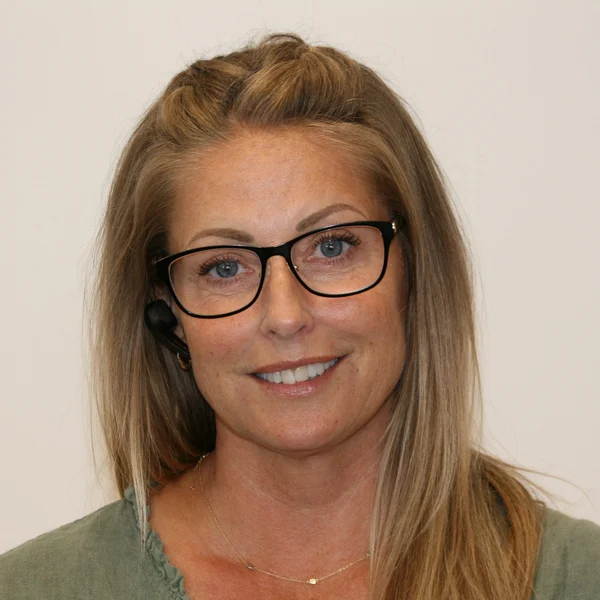
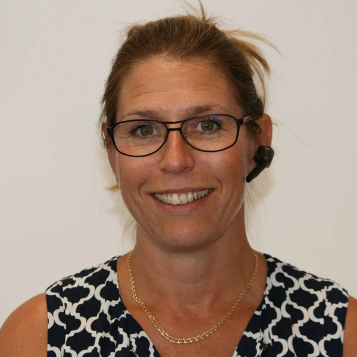
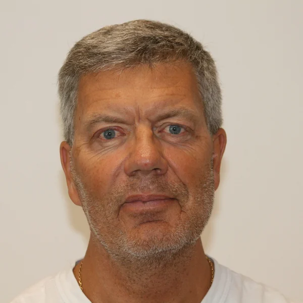
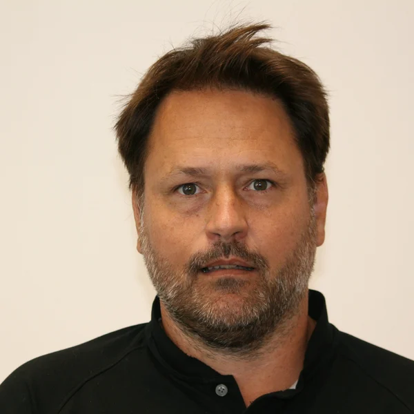

Ett lokalt hantverk.
Sedan 1950.
Vi har vår grund i rörinstallationer. I dag spänner vårt arbete från service i hemmet till VVS-entreprenader och energilösningar för fastigheter.

Nära människorna.
Nära tekniken.
Sture Anderssons Rörinstallationer grundades 1950. Med Ystad som bas arbetar vi för privatpersoner, företag, bostadsrättsföreningar och offentliga beställare på Österlen.
Här finns både egen projektering och en serviceavdelning. Lager, servicebilar och butik knyter ihop planeringen med det praktiska arbetet.
Träffa våra tolv kontaktpersonerOmsorg om
installationen.
Kunskap, utbildning och rätt arbetssätt hör ihop. Våra verksamhetsområden omfattar både VVS och certifierat arbete med kyla och värmepumpar.
Fråga oss om behörigheter för ditt uppdrag

Lär känna rösterna
på andra sidan luren.
Vårt kontor, vår butik och våra ansvariga för service, värmepumpar och projekt.
12 medarbetare visas






Det är kunderna
som känner skillnaden.
Urval av omdömen publicerade på Reco. Läs alla för att få hela bilden.
”Mycket bra och snabbt utförande. Duktig och trevlig personal.”
”Snabb personlig service allt från butik till installation”
Betyg avläst 8 oktober 2026. Utvalda äldre omdömen. Företagsprofilen är inte verifierad av Reco. Betyget uppdateras inte automatiskt här.
Vi börjar med
ditt behov.
En reparation, en ny värmepump eller ett större projekt? Berätta vad du vill få gjort, så tar vi nästa steg tillsammans.